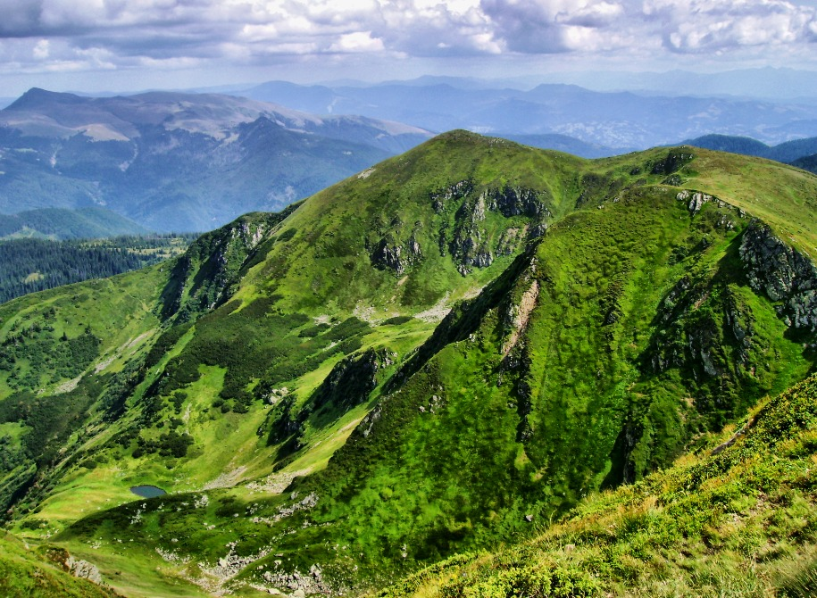
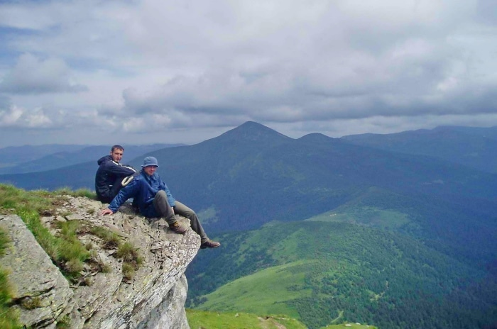
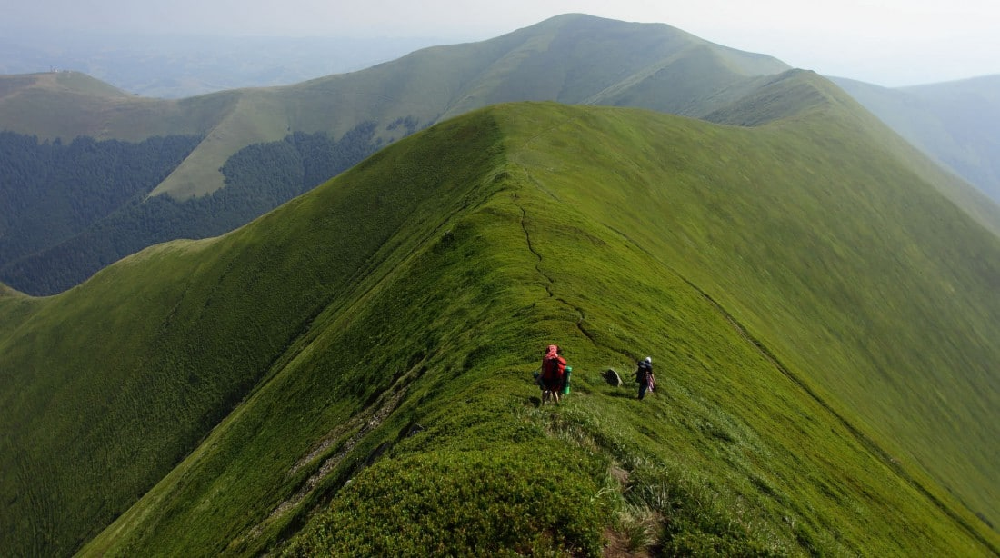
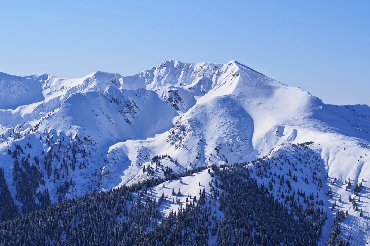
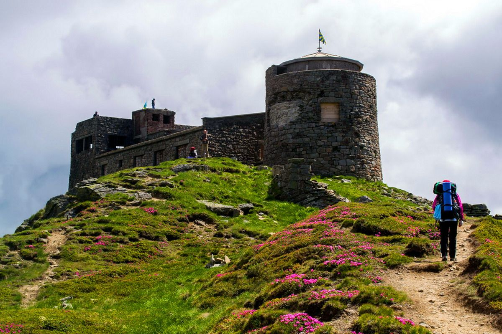
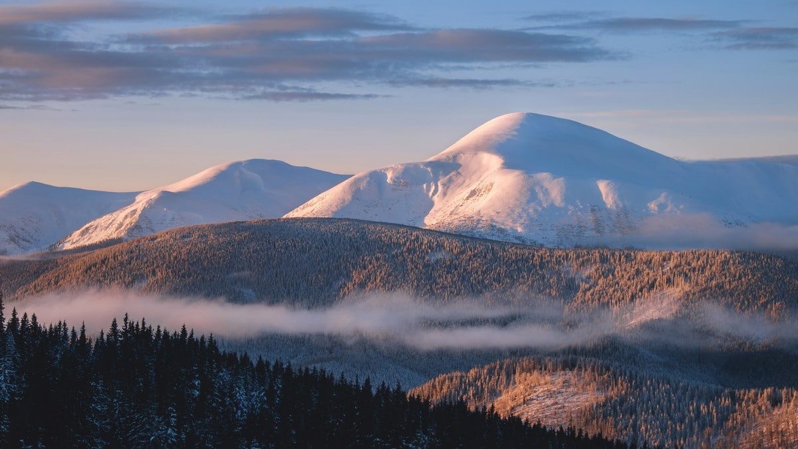
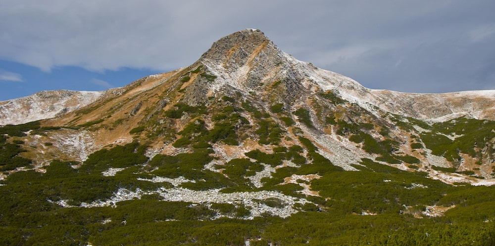

Зміст:
- 1. Говерла – вершина Карпат.
- 2. Бребенескул – кругла гора.
- 3. Піп Іван Чорногірський.
- 4. Петрос – друга за популярністю гора.
- 5. Гутин Томнатик.
Карпатські вершини ніколи не залишать байдужим того, хто на них побував. Вони можуть бути різними – стрімкими і кам’янистими, порослими ялівцем або засніженими. Але гірські вершини приваблюють туристів у будь-яку пору року і погоду.
П’ятірка найвищих вершин українських Карпат виглядає так:
- - Goverla – 2061 м;
- - Brebeneskul – 2035 м;
- - Pip Ivan Chornogirsky – 2020,8 м;
- - Petros – 2020,5 м;
- - Gytun Tomnatuk – 2016 м.
Кожна з них заслуговує уваги і готова відкрити свої таємниці усім туристам. Відправляючись у подорож, виділіть день для підйому на одну з них – маршрути можуть бути як легкими, так і складними.

Для підйому не обов’язково проживати неподалік від гори – практично з кожного курорту щоденно возять туристів до підніжжя гір, а підйом відбувається у супроводі професійного гіда. Ви можете орендувати готель в Татарові, Буковелі, Драгобраті чи іншому курортному містечку, і вже з нього відправитися на екскурсію до вершин Карпатських гір.
Говерла – вершина Карпат
Говерла – найвідоміша, найвища, найбільш відвідувана гора в Карпатах. З неї видно весь Чорногірський хребет, а якщо пощастить, то навіть місто Івано-Франківськ. У літню пору року людей тут дуже багато, особливо у вихідні дні – черга навіть на підйом. Тому охочим насолодитися тишею і пейзажами потрібно обирати інший час.

Найвища вершина Карпат дає початок одній з найбільших карпатських річок Прут. Піднятися на гору можна з баз «Заросляк» або «Козьмещик», або ж переходячи по хребту з боку Петроса або Бребенескула. Найпростішим вважається підйом з бази «Заросляк», навіть людина без спеціальної підготовки зможе пройти по цьому маршруту без особливих зусиль. Якщо ви хочете відвідати Говерлу, найбільш зручним буде поселення в таких містах, як Рахів і Ворохта.

Бребенескул – кругла гора
Друге місце в рейтингу найвищих гір Карпат посідає гора Бребенескул. Вона знаходиться на середині Чорногірського хребта, між горами Мунчель і Ребра. З гуцульського діалекту Бребенескул перекладається як «випуклий», що повністю характеризує форму вершини. Вона майже не відрізняється від основного хребта, іноді можна навіть не зрозуміти, що це пік гори. Проте багато хто вважає її однією з найкрасивіших вершин на хребті: через особливе розташування і клімат на її схилах весь рік може лежати сніг, навіть влітку. Недалеко від неї розташоване найбільше високогірне озеро України з такою ж назвою – Бребенескул.

Піп Іван Чорногірський
Чорногорський Піп Іван – одна з найпопулярніших точок хребта, з якої найчастіше починають походи. Це пов’язано з тим, що на вершині знаходиться стара зруйнована обсерваторія під назвою «Білий слон». Вигляд гори здалеку нагадує попа в рясі, тому її так і прозвали. До цього вона мала назву Чорна гора і вважалася найвищою точкою хребта. Через неї так і прозвали весь хребет – Чорногірським.

Петрос – друга за популярністю гора
У рейтингу найвищих гір українських Карпат гора Петрос посідає четверте місце, але за популярністю вона друга після Говерли. Інша її назва – Грозова гора, тому що в негоду сюди завжди б’ють блискавки. А швальний вітер ламає та зносить всі будівлі на горі. Вона знаходиться між вершинами Шешул і Говерла, і саме тому підкорюють її з вершиною Карпат за один захід. Такий маршрут досить складний, але чого тільки не зробиш, щоб побачити неймовірну красу і велич України.

Гутин Томнатик
Гора знаходиться в Рахівському районі на Закарпатті. Гутин Томнатик є частиною Карпатського біосферного заповідника. Часто її оминають при підйомі на Бребенескул, але дарма – краса і оригінальність природи на ній вражає. По дорозі на Гутин Томнатик можна знайти Бребенескул – найбільше високогірне озеро України.
